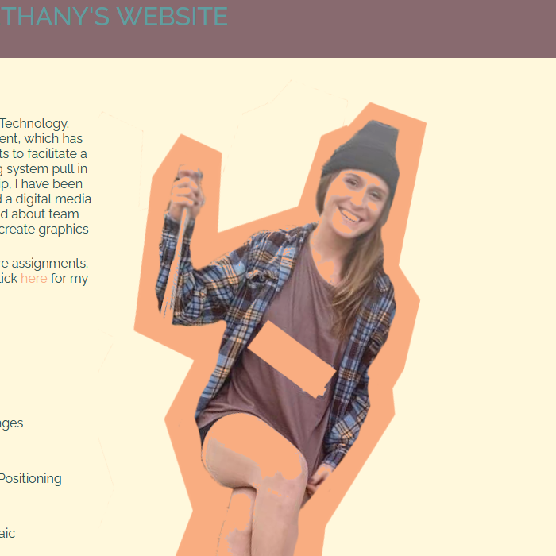
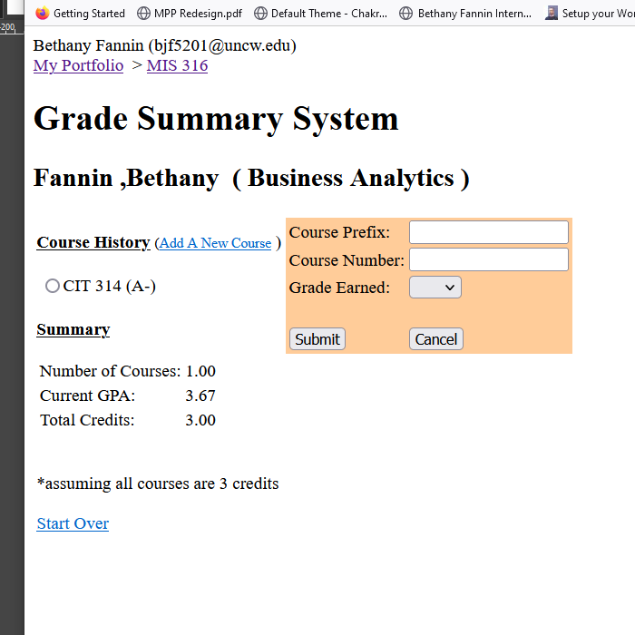

Work
Student Website
HTML, CSS, JavaScript
My website on the UNCW student server showcasing the work I completed in my Web Page Development course my junior year of college.
GoPython Snippets
Python

Work from my Introduction to Computer Science course. Just a few small pieces of Python code from my daily Python practice; snippets that I have continued to build upon.
GoBusiness Systems
C#
In this project I utilize C# to create business solutions such as a point-of-sale system in this sampling of work from my Business Applications course.
Go